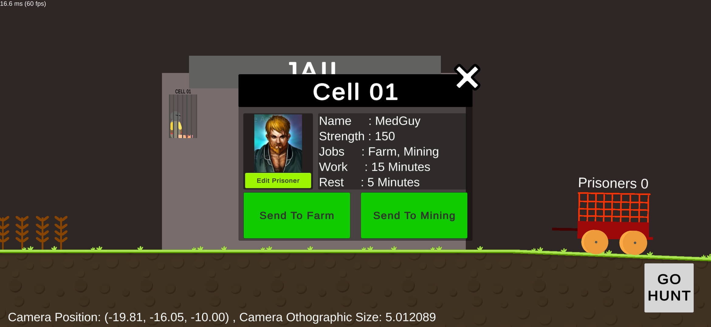
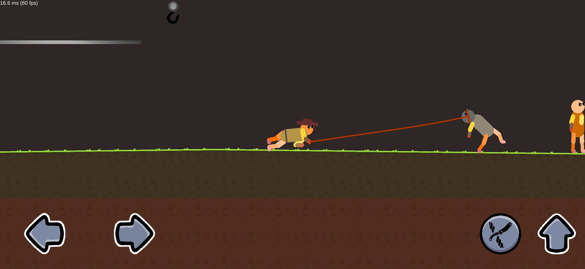
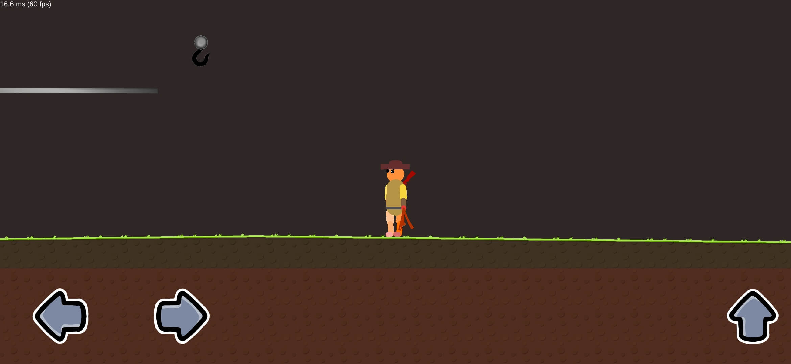
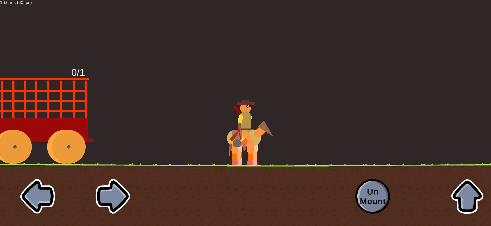

Outlaw Hunter
Lasso-Based Physics Game
A 2D verlet physics rope simulation where players throw a lasso to catch objects. Features dynamic rope folding, collision detection, and realistic physics-based mechanics.




🧠 Core Features
- Enemy Catching Mechanic: Core gameplay revolves around capturing enemies using a physics-based lasso system. Built with Verlet integration for realistic rope simulation. Learn more about Verlet physics
- Hunt & Capture: Track down and capture enemies using physics-based weapons, then bring them back to your jail
- Empire Building: Assign captured outlaws to work on farms, mines, and construction projects to expand your empire
- Weapon Upgrades: Enhance your arsenal by upgrading capture tools like the lasso and rifle for better range, power, and efficiency
- Inspiration: This project was inspired by Zombie Catchers , blending hunting mechanics with management gameplay.
🧩 Technologies Used
📜 About the Game
Mobile Physics-Based Lasso Game
A simulation game where players use a physics-driven lasso to hunt and capture enemies with unique characteristics. Built with realistic Verlet rope physics that enables dynamic folding, collision detection, and responsive player controls.
Gameplay:
Players assume the dual role of hunter and jail manager. Strategically throw your lasso to capture outlaws in challenging environments, then put them to work building your empire. Each captured enemy becomes a resource for expansion and growth.
Core Mechanics:
- Verlet physics-based rope simulation
- Dynamic lasso throwing and target capture
- Strategic enemy management system
- Empire building through workforce utilization
Inspired by Zombie Catchers – combining hunting action with management strategy on mobile platforms.
💡 Development Challenges
Verlet Rope Physics – Realistic rope simulation using Verlet integration with dynamic joints and collision systems
2D Ragdoll System – Fully physics-driven player body with constraint-based joint connections
Enemy AI – Intelligent behaviors including player avoidance, obstacle navigation, and combat mechanics
Jail Management – Scalable architecture for expansion systems and resource management
Dynamic UI – State-responsive interface adapting to game progression and resource changes
🎮 Availability
Available as an open-source project on GitHub for developers and Unity enthusiasts.